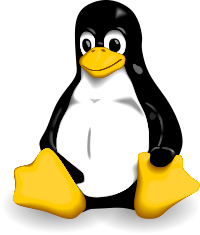

Unix y Linux¶
Unix¶
Unix es una familia de sistemas operativos. La primera versión de Linux fue desarrollada a partir de 1969. Unix se caracteriza por ser portable y multitarea.

Hoy en día los sistemas operativos Unix son ampliamente utilizados en multitud de dispositivos que abarcan desde los supercomputadores más capaces hasta los teléfonos móviles más populares, pasando por los ordenadores que utilizamos diariamente en nuestros escritorios. La filosofía de los sistemas Unix se caracteriza por:
un sistema de ficheros jerárquico,
una gran colección de pequeños programas que pueden trabajar en serie,
el uso de ficheros de texto para almacenar los datos,
tratar los dispositivos como ficheros.
Linux y MacOS X son ejemplos de sistemas Unix.
Unix es un sistema operativo portable, multitarea y multiusuario desarrollado a partir de 1969.
Linux¶
Linux es una familia de sistemas operativos de tipo Unix que utilizan el kernel Linux. Linux puede instalarse en prácticamente cualquier ordenador personal además en en teléfonos móviles y supercomputadores.
El nombre proviene del programador original, un estudiante llamado Linus Torvals, que en 1991 completando las herramientas GNU desarrolladas por el proyecto GNU de la Fundación del Software Libre, creó la primera versión de este sistema operativo. El papel fundamental jugado por estas herramientas libres del proyecto GNU hace que este sistema operativo sea denominado también como GNU/Linux, pero en este texto utilizaremos la denominación más sencilla y corta.
El desarrollo de Linux es uno de los ejemplos más claros de desarrollo de software libre por una comunidad dispersa de programadores. Cualquiera puede usar el sistema operativo, estudiarlo y modificarlo. Estos derechos están protegidos por la licencia GPL (GNU General Public License).
Distribuciones¶
Linux, como cualquier otro sistema operativo, se compone de un gran número de piezas, que, en este caso, son desarrolladas de forma independiente por miles de programadores y proyectos. Normalmente estas piezas son integradas por un distribuidor y Linux es suministrado como una distribución Linux. Las distribuciones Linux incluyen todo el software necesario para instalar un servidor o un escritorio. Algunas de las aplicaciones comúnmente incluidas incluyen: el navegador web Firefox y las aplicaciones de oficina LibreOffice.
Existen cientos de distribuciones Linux. Estas distribuciones están adaptadas para usuarios o tareas específicas. Algunas de estas distribuciones están desarrolladas o apoyadas por empresas como Fedora (Red Hat) y Ubuntu (Canonical) mientras que otras son mantenidas por la propia comunidad de usuarios como Debian.
Software libre¶
El software libre es software que puede ser utilizado, estudiado, modificado, copiado y redistribuido sin restricciones. Habitualmente el software libre suele ser además gratuito, pero ese no tiene por que ser necesariamente el caso.
En la práctica el software libre se distribuye junto al código fuente que lo hace posible y junto a una nota en la que se explican cuales son los derechos y las obligaciones del usuario final. Esta nota se denomina licencia. El movimiento del software libre fue iniciado por Richard Stallman en 1983. Stallman decidió crear un sistema compatible con Unix completamente libre al que llamó GNU (GNU is Not Unix). Con el tiempo este sistema acabaría uniéndose al kernel de Linus para formar un sistema operativo completo.
Dado que las aplicaciones del software libre suelen ser gratuitas, su modelo de negocio suele basarse en el cobro de los servicios de soporte al usuario y de adaptación del software.
Introducción a Ubuntu¶
Ubuntu es una distribución Linux mantenida por la empresa Canonical. Está orientada a usuarios de escritorio y sus puntos fuertes son su facilidad de uso y de instalación. Aunque el escritorio es algo distinto al de Windows o Mac OS X familiarizarse con él para un usuario acostumbrado a cualquiera de los otros sistemas operativos no debería presentar muchos problemas.
Su instalación resulta muy sencilla. Al instalarla, una gran cantidad de software se instala de forma automática para facilitar su uso como escritorio. Ejemplos de estos programas son LibreOffice o Firefox. Además de estos programas instalados por defecto una enorme cantidad de programas se encuentra disponible para ser instalados con unos pocos clicks de ratón.
Ubuntu está basada en una distribución mantenida por la comunidad de usuarios llamada Debian. El principal objetivo de Debian es crear un sistema operativo robusto que incluya la mayor proporción posible de programas libres.
Existen numerosos manuales de utilización de Ubuntu, pero algunas de las guías más completas son la Ubuntu Desktop Guide y el manual Getting Started with Ubuntu. Vamos a recorrer lo principales conceptos de este sistema operativo basandonos en este manual.
Los usuarios¶
Los sistemas Unix son multiusuario, es decir soportan que varios usuarios los utilicen simultáneamente. Todos los usuarios, excepto uno, tienen unos privilegios bastante restringidos y no pueden modificar el sistema. De este modo unos usuarios se ven protegidos de las acciones de los otros.
Existe un usuario especial llamado root con privilegios de administración absolutos sobre el sistema. Para realizar las tareas cotidianas nunca hay que acceder al sistema como root. En Ubuntu este usuario está deshabilitado por defecto y sólo se pueden adquirir los privilegios de administrador temporalmente.
El escritorio¶
Todos las distribciones basadas en entronos graficos (GUI) suelen tener varios entornos de escritorio para eleguir. Los entornos de escritorio suelen diferir por:
El estilo y apariencia del entorno
La forma en la que los diferentes elementos se disponen en la pantalla
La forma en la que el ususario navega por el escritorio
En el caso de Ubuntu el entorno de escritorio por defecto se denomina Unity. Se caracteriza por tener dos barras, la denominada Menu Bar y el Launcher. El Menu Bar incorpora por una lado los menus de las aplicaciones que estań activas y, por otro, un area de indicadores que nos ofrecen informacion actualizada del sistema en todo momento. El Launcher es la barra vertical que facilita el acceso a las aplicaciones mas usadas y a su estado, además de a los discos montados y a la papelera. Además tenemos el selector de escritorios virtuales. En el launcher encontramos varias aplicaciones especiales:
El menu
El selector de escritorios virtuales
La papelera
Los escritorios virtuales sirven para ampliar la zona de trabajo. Por defecto hay 4 escritorios virtuales que amplían nuestro monitor por cuatro.
Ejercicios¶
Para comprobar que no tenemos problemas de manejo del sistema vamos a realizar una serie de tareas:
Explorar el escritorio abriendo programas, moviéndote entre escritorios virtuales, minimizando y maximizando las aplicaciones, etc.
Navegar al directorio “Documentos” y comprobar si tenemos algún archivo guardado.
Crear un subdirectorio llamado “curso” dentro del directorio “Documentos”.
Crear un fichero de texto mediante el editor de textos gedit y guardarlo en el directorio que acabamos de crear.
Copiar el fichero anterior al directorio personal.
Eliminar el fichero original.
Reinicia el sistema operativo.
Bloquea la sesión de tu usuario y vuelve a entrar en ella
Añade un nuevo usuario al sistema
Sal de tu usuario actual y entra como el nuevo usuario
Cambiar el password del nuevo usuario
Configura el protector de pantalla para que se inicie a los 10 minutos de inactividad
Modifica los ajustes de la aplicación terminal para que el tipo de letra tenga un tamaño de 11 puntos
Ancla la aplicación terminal a la barra de aplicaciones y desancla el editor de hojas de cálculo LibreOffice
La terminal de UNIX¶
La Shell (o terminal) es un interprete de comandos. Es simplemente un modo alternativo de controlar un ordenador basado en una interfaz de texto. La terminal nos permite ejecutar software escribiendo el nombre del programa que queremos ejecutar en la terminal. Podemos pedirle al ordenador que ejecute un programa mediante el ratón ciclando en distintos lugares del escritorio o podemos escribir una orden para conseguir el mismo objetivo. Por ejemplo, para pedirle al ordenador que nos de una lista de los archivos presentes en un directorio podemos abrir un navegador de archivos o podemos escribir en la terminal:
$ ls folder_name
file_1.txt
file_2.txt
Ninguna de las dos formas de comunicarse con el ordenador es mejor que la otra aunque en ciertas ocasiones puede resultar más conveniente utilizar una u otra Las ventajas de la línea de comandos son:
Necesidad. Existe mucho software que está sólo disponible en la terminal. Esto es especialmente cierto en el área de la bioinformática.
Flexibilidad. Los programas gráficos suelen ser muy adecuados para realizar la tarea para la que han sido creados, pero son difíciles de adaptar para otras tareas. Los programas diseñados para ser usados en la línea de comandos suelen ser muy versátiles.
Reproducibilidad. Documentar y repetir el proceso seguido para realizar un análisis con un programa gráfico es muy costoso puesto que es difícil describir la secuencia de clicks y doble clicks que hemos realizado. Por el contrario, los procesos realizados mediante la línea de comandos son muy fáciles de documentar puesto que tan sólo debemos guardar el texto que hemos introducido en la pantalla.
Fiabilidad. Los programas básicos de Unix fueron creados en los años 70 y han sido probados por innumerables usuarios por lo que se han convertido en piezas de código extraordinariamente confiables.
Recursos. Las interfaces gráficas suelen consumir muchos recursos mientras que los programas que funcionan en línea de comandos suelen ser extraordinariamente livianos y rápidos. Este poco uso de recursos facilita, por ejemplo, que se utilice a través de la red.
El problema de la terminal es que para poder utilizarla debemos saber previamente qué queremos hacer y cómo. Es habitual descubrir como funciona un programa con una interfaz gráfica sin tener que leer un manual, esto no sucede en la terminal.
Para usar la línea de comandos hay que abrir una terminal. Se abrirá una terminal con un mensaje similar a:
usuario $
Este pequeño mensaje se denomina `prompt <https://en.wikipedia.org/wiki/Command-line_interface#Command_prompt>`_* y el cursor parpadeante que aparece junto al él indica que el ordenador está esperando una orden. El mensaje exacto que aparece en el *prompt puede variar ligeramente, pero en Ubuntu suele ser similar a:
usuario@ordenador:~/documentos$
En el prompt de Ubuntu se nos muestra el nombre del usuario, el nombre del ordenador y el directorio en el que nos encontramos actualmente, es decir, el directorio de trabajo actual.
Cuando el prompt se muestra podemos ejecutar cualquier cosa, por ejemplo le podemos pedir que liste los ficheros mediante el comando ls (LiSt):
usuario $ ls
lista_libros.txt
rectas_cocina/
ls, como cualquier otro comando, es en realidad un programa que el ordenador ejecuta. Cuando escribimos la orden (y pulsamos enter) el programa se ejecuta. Mientras el programa está ejecutándose el prompt desaparece y no podemos ejecutar ningún otro comando. Pasado el tiempo el programa termina su ejecución y el prompt vuelve a aparecer. En el caso del comando ls el tiempo de ejecución es tan pequeño que suele ser imperceptible.
Los programas suelen tener unas entradas y unas salidas. Dependiendo del caso estas pueden ser ficheros o caracteres introducidos o impresos en la pantalla. Por ejemplo, el resultado de ls es simplemente una lista impresa de ficheros y directorios en la interfaz de comandos.
Normalmente el comportamiento de los programas puede ser modificado pasándoles parámetros. Por ejemplo, podríamos pedirle al programa ls que nos imprima una lista de ficheros más detallada escribiendo:
$ ls -l
Ayuda¶
Cada comando tiene unos parámetros y opciones distintos. La forma estándar de pedirles que nos enseñen cuales son estos parámetros suele ser utilizar las opciones ‘–help’, ‘-h’ o ‘-help’, aunque esto puede variar en comandos no estándar.
$ ls --help
Modo de empleo: ls [OPCIÓN]... [FICHERO]...
List information about the FILEs (the current directory by default).
Sort entries alphabetically if none of -cftuvSUX nor --sort.
Otro modo de acceder a una documentación más detallada es acceder al manual del programa utilizando el comando man (MANual):
$ man ls
(para terminar pulsar "q")
man es un programa interactivo, cuando ejecutamos el comando el programa se abre y el prompt desaparece. man es en realidad un visor de ficheros de texto por lo que cuando lo ejecutamos la pantalla se rellena con la ayuda del programa que hemos solicitado. Podemos ir hacia abajo o hacia arriba y podemos buscar en el contenido de la ayuda. El prompt y la posibilidad de ejecutar otro programa no volverán a aparecer hasta que no cerremos el programa interactivo. En el caso de man para cerrar el programa hay que pulsar la tecla “q”.
Completado automático e historia¶
El intérprete de comandos dispone de algunas utilidades para facilitarnos su uso. Una de las más utilizadas es el completado automático. Podemos evitarnos escribir una gran parte de los comandos haciendo uso de la tecla tabulador. Si empezamos a escribir un comando y pulsamos la tecla tabulador el sistema completará el comando por nosotros. Para probarlo creemos los ficheros datos_1.txt, datos_2.txt y tesis.txt:
~$ touch datos_1.txt
~$ touch datos_2.txt
~$ touch experimento.txt
Si ahora empezamos a escribir cp e y pulsamos el tabulador dos veces, el intérprete de comandos completará el comando automáticamente:
~$ cp e
~$ cp experimento.txt
Si el intérprete encuentra varias alternativas completará el comando hasta el punto en el que no haya ambigüedad. Si deseamos que imprima una lista de todas las alternativas disponibles para continuar con el comando deberemos pulsar el tabulador dos veces.
~$ cp d
$ cp datos_
datos_1.txt datos_2.txt
~$ cp datos_
Otra de las funcionalidades que más nos pueden ayudar es la historia. El intérprete recuerda todos los comandos que hemos introducido anteriormente. Si queremos podemos obtener una lista de todo lo que hemos ejecutado utilizando el comando history. Pero lo más socorrido es simplemente utilizar los cursores arriba y abajo para revisar los comandos anteriores. Otra forma de acceder a la historia es utilizar la combinación de teclas control y r. De este modo podemos buscar comandos antiguos sencillamente.
Ejercicio¶
Lista todos los comandos que empiezan por apt
Bibliografía¶
Existen numerosas fuentes sobre la historia y la filosofía de Unix, de Linux y del software libre. Entre ellas se encuentran:
Las páginas de la wikipedia sobre: Unix, Linux, Ubuntu y software libre.
Rebel Code, un libro de Glyn Moody dedicado a la historia del movimiento del software libre.
La catedral y el bazar de Eric S. Raymond. Un ensayo sobre los beneficios del modelo de desarrollo asociados al software libre.
The Art of Unix Programming (pdf) de Eric S. Raymond. Dedicado a la filosofía de los sistemas Unix.
El excelente Ubuntu manual pdf.
Hay varios cursos para iniciarse en el uso de la línea de comandos de Unix, como:
Put Yourself in Command de la Free Software Fundation, copia en pdf.
Rute User’s Tutorial and Exposition de Paul Sheer, copia en pdf.

{kind=link}
{kind=link}